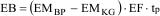
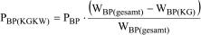

(Fundstelle: BGBl. I 2007, 1953;
bzgl. der einzelnen Änderungen vgl. Fußnote)
Formel 1
Zuteilung für Kuppelgas erzeugende Anlagen nach Anhang 1 Nr. VII bis IXb des Treibhausgas-Emissionshandelsgesetzes vom 8. Juli 2004 (BGBl. I S. 1578), das zuletzt durch Artikel 9 des Gesetzes vom 11. August 2010 (BGBl. I S. 1163) geändert worden ist, die bis zum 31. Dezember 2002 in Betrieb gegangen sind.
Formel 2
Zuteilung für Kuppelgas verwertende Anlagen nach Anhang 1 Nr. VI bis XVIII des Treibhausgas-Emissionshandelsgesetzes vom 8. Juli 2004 (BGBl. I S. 1578), das zuletzt durch Artikel 9 des Gesetzes vom 11. August 2010 (BGBl. I S. 1163) geändert worden ist, die bis zum 31. Dezember 2002 in Betrieb gegangen sind.

Formel 3
Produktionsmenge von Kuppelgas verwertenden Anlagen nach Anhang 1 Nr. I bis V des Treibhausgas-Emissionshandelsgesetzes vom 8. Juli 2004 (BGBl. I S. 1578), das zuletzt durch Artikel 9 des Gesetzes vom 11. August 2010 (BGBl. I S. 1163) geändert worden ist, die bis zum 31. Dezember 2002 in Betrieb gegangen sind.

| EB | Menge der Emissionsberechtigungen für die Zuteilungsperiode nach Anwendung der für die Anlage maßgeblichen Zuteilungsregel (in t CO2-Äquiv.) |
| EF | Erfüllungsfaktor für die Zuteilungsperiode für Anlagen nach Anhang 1 Nr. VI bis XVIII des Treibhausgas-Emissionshandelsgesetzes vom 8. Juli 2004 (BGBl. I S. 1578), das zuletzt durch Artikel 9 des Gesetzes vom 11. August 2010 (BGBl. I S. 1163) geändert worden ist |
| EMBP | Durchschnittliche jährliche Kohlendioxid-Emissionen der Anlage in der Basisperiode |
| EMKG | Durchschnittliche jährliche Emissionen in der Basisperiode aus der Verwertung von Kuppelgasen |
| EMWL | Durchschnittliche jährliche Emissionen in der Basisperiode aus Kuppelgasen, die an Anlagen weitergeleitet wurden, die dem Anwendungsbereich des Treibhausgas-Emissionshandelsgesetzes vom 8. Juli 2004 (BGBl. I S. 1578), das zuletzt durch Artikel 9 des Gesetzes vom 11. August 2010 (BGBl. I S. 1163) geändert worden ist, unterliegen |
| PBP | Durchschnittliche jährliche Produktion der Anlage in der Basisperiode (in MWh pro Jahr) |
| PBP(KGKW) | Produktionsmenge von Kuppelgas verwertenden Anlagen nach Anhang 1 Nr. I bis V des Treibhausgas-Emissionshandelsgesetzes vom 8. Juli 2004 (BGBl. I S. 1578), das zuletzt durch Artikel 9 des Gesetzes vom 11. August 2010 (BGBl. I S. 1163) geändert worden ist |
| tp | Anzahl der Jahre der Zuteilungsperiode |
| WBP(KG) | Brennstoffenergie der eingesetzten Kuppelgase in der Basisperiode |
| WBP(gesamt) | Brennstoffenergie aller eingesetzten Brennstoffe in der Basisperiode |